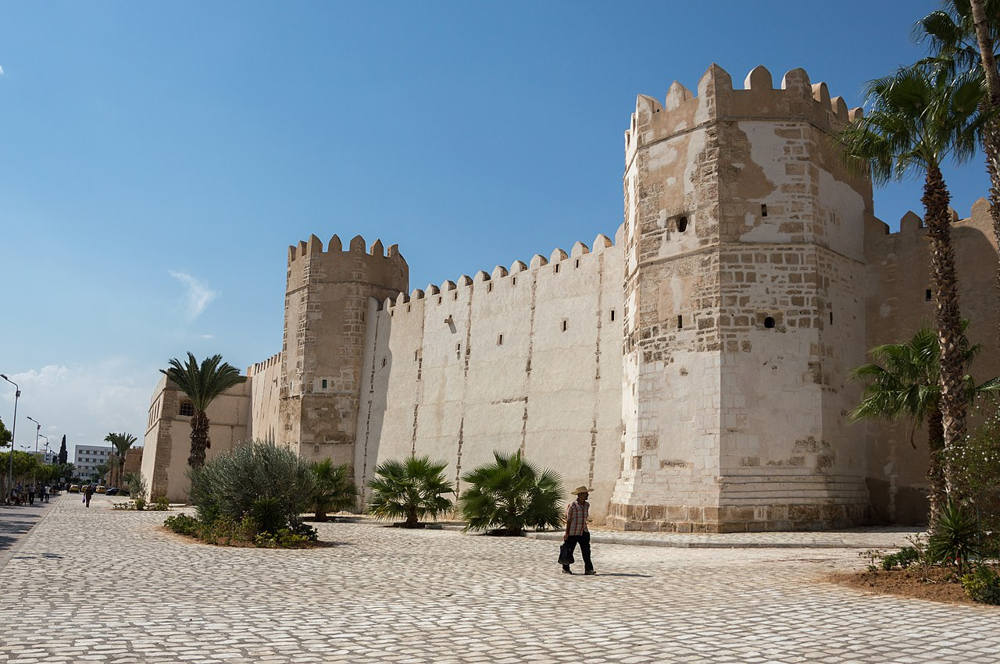
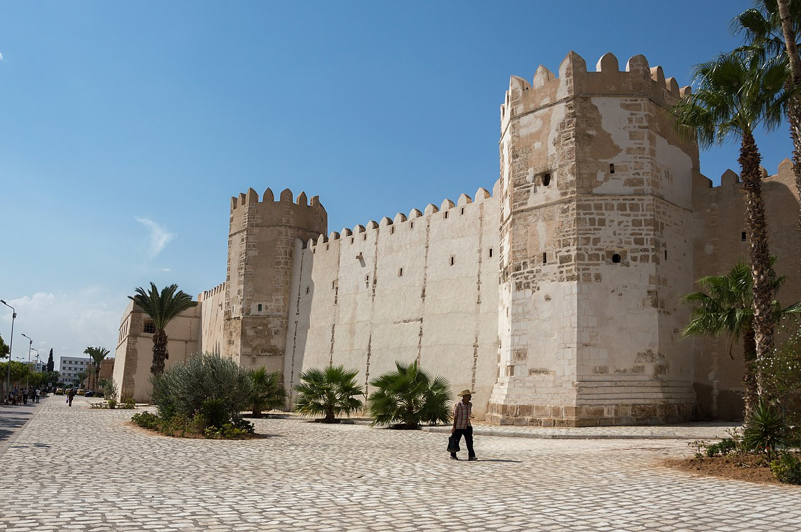

Le gouvernorat de Sfax est situé au Centre-Est de la République Tunisienne, il est délimité par la mer méditerranée à l’est, par le gouvernorat de Mahdia au Nord par le gouvernorat de Kairouan, Sidi Bouzid et Gafsa à l’ouest, et par le gouvernorat de Gabès au Sud. Il couvre 7 545 km² soit 5 % de la superficie totale du pays. Riche de ses industries et de son port, la ville joue un rôle économique de premier plan avec l'exportation de l'huile d'olive et du poisson frais ou congelé.

Sfax, ancienne Taparura romaine, est rebâtie par les Aghlabides au ixe siècle à partir des matériaux de la ville romaine située à environ trois kilomètres. Ils construisent les remparts qui donnent à la médina sa configuration actuelle. La cité doit résister aux Hilaliens venus d'Égypte en 1057 et, de 1095 à 1099, elle constitue un petit émirat indépendant. Elle passe, comme la plupart des villes côtières, sous la domination du roi normand Roger II de Sicile en 1148, avant d'être réintégrée à la sphère musulmane par les Almohades d'Abd al-Mumin en 1159 ; ceci fait suite à trois ans d'une révolte amorcée par Omar, avec notamment le massacre des chrétiens de la cité le 25 février 1156.

Parmi les plats typiquement sfaxiens, on trouve les poissons et gambas, cuisinés ou grillés, le couscous au poisson, la charmoula (sauce qui accompagne le poisson salé, à base de raisins secs, oignons, huile d'olive et épices) et le bezine (sorte de crème que l'on obtient à la suite d'une longue préparation qui consiste à extraire l'amidon présent dans la semoule) que l'on consomme le jour de l'Aïd el-Fitr. La ville est aussi connue pour sa pâtisserie fine : des petits gâteaux à base de pâte d'amande, de noisettes ou de pistaches, parfumés à l'eau de rose et au miel. On y dénombre de nombreuses enseignes spécialisées.


 
